Quy trình nghiệp vụ
Phân hệ Ngân quỹ quản lý tình hình thu/chi tiền mặt và tiền gửi ngân hàng của doanh nghiệp, giúp kế toán hạn chế ghi nhận sai và chi âm tiền. Hỗ trợ kiểm soát những hóa đơn bán hàng/ hóa đơn mua hàng chưa thanh toán hoặc đã thanh toán một phần
Quy trình

Các luồng quy trình
· Lập chứng từ Thu tiền mặt. Chi tiết nghiệp vụ Thu tiền mặt
· Lập chứng từ Chi tiền mặt. Chi tiết nghiệp vụ Chi tiền mặt
· Kiểm kê tiền mặt. Chi tiết nghiệp vụ Kiểm kê tiền mặt
· Thanh toán lương cho nhân viên. Chi tiết nghiệp vụ Thanh toán lương cho nhân viên
Thu tiền mặt
Xem video hướng dẫn
Thu tiền mặt
Mô tả nghiệp vụ
Khi phát sinh các nghiệp vụ thu tiền mặt từ những nguồn thu ngoài các luồng nghiệp vụ đang có như Thu tiền nhượng bán TSCĐ, Thu tiền thanh lý TSCĐ hoặc từ một nguồn thu tiền mặt khác, người dùng sử dụng tính năng Thu tiền mặt để nhập dữ liệu
Hướng dẫn trên phần mềm
Bước 1: Vào phân hệ Ngân quỹ, Chọn Tiền mặt, Chọn Thu tiền mặt (Hoặc thực hiện Tìm kiếm trực tiếp chức năng trên ô tìm kiếm chung của hệ thống), Nhấn Tạo
Bước 2: Khai báo các thông tin của phiếu Thu tiền mặt
- Tại mục Lý do thu(Tab chung) : Chọn lý do tương ứng với Nghiệp vụ đang phát sinh
- Tại mục Tổng tiền nguyên tệ (Tab chung): Nhập số tiền
- Chọn và nhập các thông tin về: Đối tượng, Người nộp tiền, Nhân viên thu ngân, Chứng từ kèm theo và Nội dung giao dịch (Nếu có)
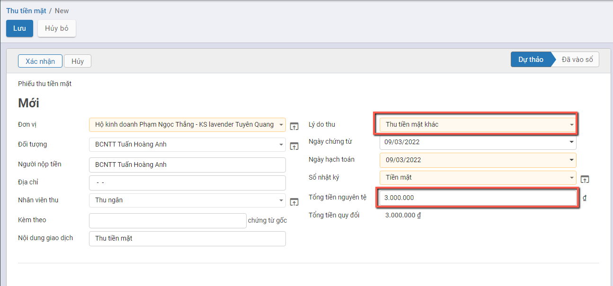
Bước 3: Nhấn Lưu
Sau khi Lưu lại thông tin: Hệ thống tự động hiển thị thông tin bút toán với số tiền tương ứng đã nhập
Để sửa lại dữ liệu: Người dùng nhấn nút Sửa
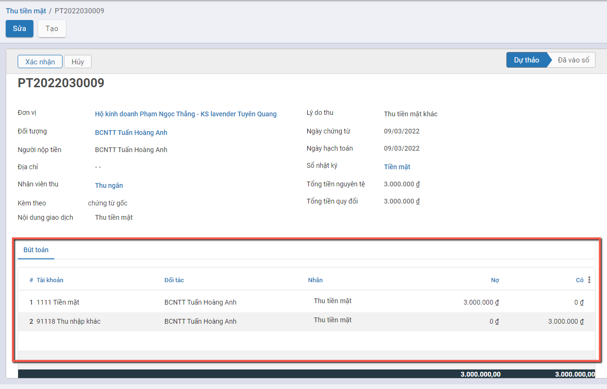
Bước 4: Nhấn Xác nhận: Sau khi dữ liệu đã nhập đúng và đủ. Hệ thống đưa các bút toán vào sổ và chuyển trạng thái chứng từ thành Đã vào sổ
Để sửa lại thông tin đã nhập Người dùng phải nhấn nút Hủy xác nhận
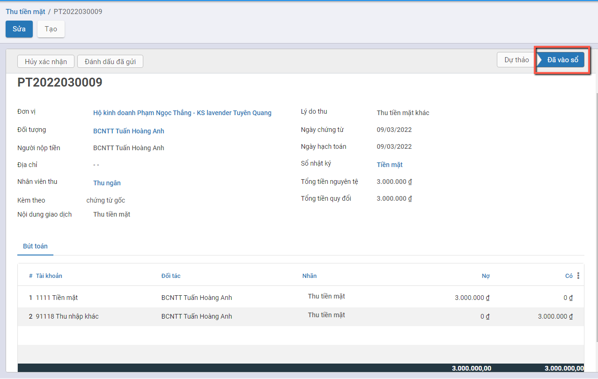
Thu tiền từ khách hàng
Mô tả nghiệp vụ
Với những giao dịch khách hàng thanh toán bằng tiền mặt cho các đơn hàng, người dùng thực hiện nghiệp vụ thu tiền từ khách hàng và nhập vào hệ thống để ghi nhận thông tin.
Xem video hướng dẫn
Hướng dẫn trên phần mềm
Bước 1: Vào phân hệ Ngân quỹ, Chọn Tiền mặt, Chọn Thu tiền từ khách hàng (Hoặc thực hiện Tìm kiếm trực tiếp chức năng trên ô tìm kiếm chung của hệ thống)
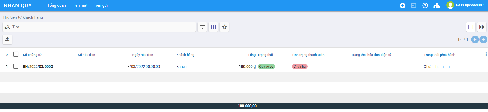
- Tích chọn chứng từ khách hàng thanh toán tiền nợ
- Nhấn Ghi nhận thanh toán
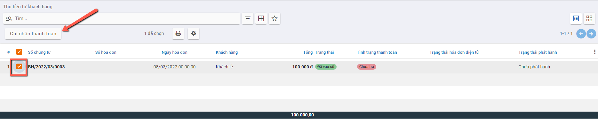
Bước 2: Nhập các thông tin trên màn hình Ghi nhận thanh toán
-
Tại mục Sổ nhật ký: Chọn Tiền mặt
-
Với thông tin Số tiền:
Nếu Khách hàng trả toàn bộ số tiền theo Hóa đơn: Giữ nguyên thông tin Số trả
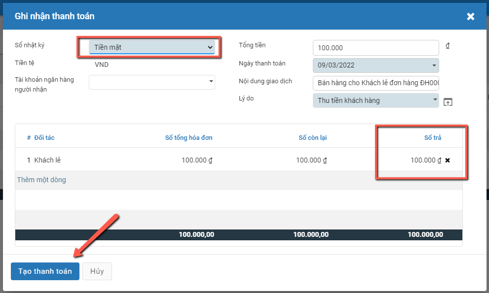
Nếu Khách hàng chưa trả đủ số tiền theo Hóa đơn: Thực hiện Sửa thông tin Số trả theo giá trị tiền thực tế. Với Số tiền còn lại có 2 lựa chọn
- Giữ vẫn mở: Khi đó hệ thống Ghi nhận theo đúng giá trị đã trả trong đợt đầu, và đánh dấu chưa thanh toán đủ
- Đánh dấu đã trả đủ: Hệ thống ghi nhận theo giá trị Số trả và đánh dấu đã thanh toán đủ cho Hóa đơn
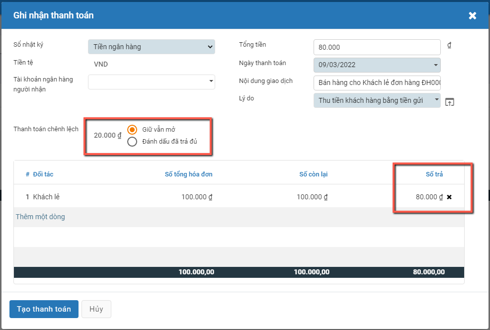
Bước 3: Nhấn Tạo Thanh toán để tạo Phiếu thu tiền mặt
- Thông tin Phiếu thu tiền mặt được tạo với các thông tin đã chọn trên phần Ghi nhận thanh toán
- Hệ thống tự động hạch toán và lên bút toán
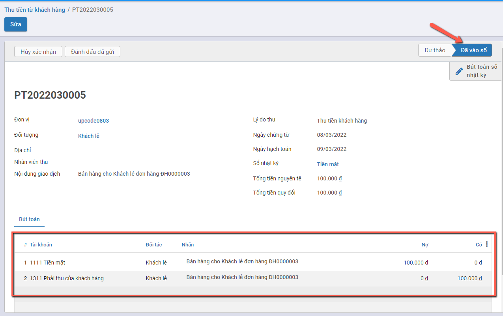
- Hệ thống Ghi nhận Thanh toán 1 phần cho các Hóa đơn chưa thanh toán đủ
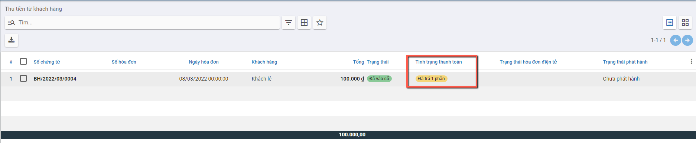
Chi tiền mặt
Xem video hướng dẫn
Thanh toán tiền điện nước, tiền internet, tiền thuê mặt bằng..
Mô tả nghiệp vụ
Kế toán thực hiện tạo Phiếu chi tiền mặt cho các dịch vụ phát sinh hàng tháng như : Điện, nước,internet. mặt bằng,......
Hướng dẫn trên phần mềm
Bước 1: Vào phân hệ Ngân quỹ, Chọn Tiền mặt, Chọn Chi tiền mặt (Hoặc thực hiện Tìm kiếm trực tiếp chức năng trên ô tìm kiếm chung của hệ thống), Nhấn Tạo

Bước 2: Khai báo các thông tin của Chi tiền mặt
- Tại mục Đối tượng: Chọn Khách hàng/Nhà cung cấp.
- Tại mục Tài khoản ngân hàng đối tượng : Chọn tài khoản nhận tiền (Nếu có)
- Tại mục Người nhận: Nhập người nhận tiền (Nếu có)
- Tại Tổng tiền nguyên tệ: Nhập số tiền cần thanh toán
- Tại mục Lý do chi: Thực hiện chọn Lý do chi như Chi tiền điện bằng tiền mặt, Chi tiền mua văn phòng phẩm,.... (nhấn Tìm kiếm thêm để tìm thêm Lý do chi tiền)

Bước 3: Nhấn Lưu

Bước 4: Sau khi kiểm tra thông tin đã đầy đủ và chính xác , Nhấn Xác nhận: Khi đó thông tin bút toán được Hạch toán vào sổ
Lưu ý:
- Muốn chuyển trạng thái từ Hoàn thành về Nháp thì Nhấn Hủy xác nhận

- Trường hợp có nhu cầu theo dõi chi phí chi tiết theo Khoản mục chi phí, Công trình, Đơn hàng, Hợp đồng...
- Nhấn thêm cột dữ liệu ở Tab Bút toán
- Chọn thông tin Khoản mục chi phí, Công trình, Đơn hàng, Hợp đồng... muốn theo dõi chi tiết
Thanh toán các chi phí: BHXH, BHYT, BH thất nghiệp
Mô tả nghiệp vụ
Thực hiện chi trả các khoản liên quan đến Bảo hiểm xã hội, bảo hiểm y tế hoặc Chi trả thất nghiệp cho nhân viên
Hướng dẫn trên phần mềm
Bước 1: Vào phân hệ Ngân quỹ, Chọn Tiền mặt, Chọn Chi tiền mặt (Hoặc thực hiện Tìm kiếm trực tiếp chức năng trên ô tìm kiếm chung của hệ thống), Nhấn Tạo
Bước 2: Khai báo các thông tin của Chi tiền mặt
- Tại mục Lý do chi: Chọn Chi trả bảo hiểm xã hội hoặc Chi trả bảo hiểm y tế hoặc Chi trả bảo hiểm thất nghiệp
- Tại Tổng tiền nguyên tệ: Nhập số tiền cần thanh toán

Bước 3: Nhấn Lưu
Bước 4: Nhấn Xác nhận: Ghi nhận thông tin các bút toán được Hạch toán vào Sổ
Lưu ý: Muốn chuyển trạng thái từ Hoàn thành về Nháp thì Nhấn Hủy xác nhận
Thanh toán cho nhà cung cấp
Mô tả nghiệp vụ
Với những giao dịch chi trả đơn hàng cho nhà cung cấp bằng tiền mặt, người dùng thực hiện nghiệp vụ Chi trả tiền cho nhà cung cấp và nhập vào hệ thống để ghi nhận thông tin
Xem video hướng dẫn
Hướng dẫn trên phần mềm
Bước 1: Tại phân hệ Ngân quỹ, Chọn Tiền mặt, Chọn Thanh toán cho nhà cung cấp (Hoặc thực hiện tìm kiếm trức tiếp chức năng trên ô tìm kiếm chung của hệ thống)

Bước 2: Tích chọn chứng từ khách hàng thanh toán tiền nợ: Nhấn Ghi nhận thanh toán

Bước 3: Trên thông tin Ghi nhận thanh toán Chọn/Nhập một số thông tin:
-
Tại mục Sổ nhật ký: Chọn Tiền mặt
-
Thực hiện chi trả số tiền đủ theo Hóa đơn hoặc chỉ chi trả một phần: Người dùng điều chỉnh thông tin tiền tại cột 'Số trả'

Bước 4: Nhấn Tạo Thanh toán để tạo Phiếu chi tiền mặt: Hệ thống tự động Tạo phiếu chi và ghi nhận thông tin thanh toán: Đã trả đủ hoặc Đã trả 1 phần

Kiểm kê tiền mặt
Mô tả nghiệp vụ
Định kỳ theo quy định hoặc khi có phát sinh yêu cầu kiểm kê quỹ từ Ban lãnh đạo công ty, sẽ phát sinh một số hoạt động sau:
- Thành lập hội đồng kiểm kê gồm: Kế toán hoặc Giám đốc.
- Đếm thực tế số tiền mặt tồn quỹ theo từng loại tiền về mặt số lượng và mệnh giá.
- Đối chiếu số dư thực tế kiểm kê với sổ kế toán tiền mặt tại quỹ, nếu có sự chênh lệch thì thực hiện tìm nguyên nhân bằng cách đối chiếu sổ quỹ với sổ kế toán tiền mặt tìm ra những giao dịch thu, chi tiền mặt không khớp giữa 2 sổ.
- Sau khi tìm nguyên nhân thì Giám đốc hoặc Kế toán sẽ ra quyết định xử lý.
Xem video hướng dẫn
Hướng dẫn trên phần mềm
Bước 1: Vào phân hệ Ngân quỹ, Chọn Tiền mặt, Chọn Kiểm kê tiền mặt (Hoặc thực hiện Tìm kiếm trực tiếp chức năng trên ô tìm kiếm chung của hệ thống), Nhấn Tạo**
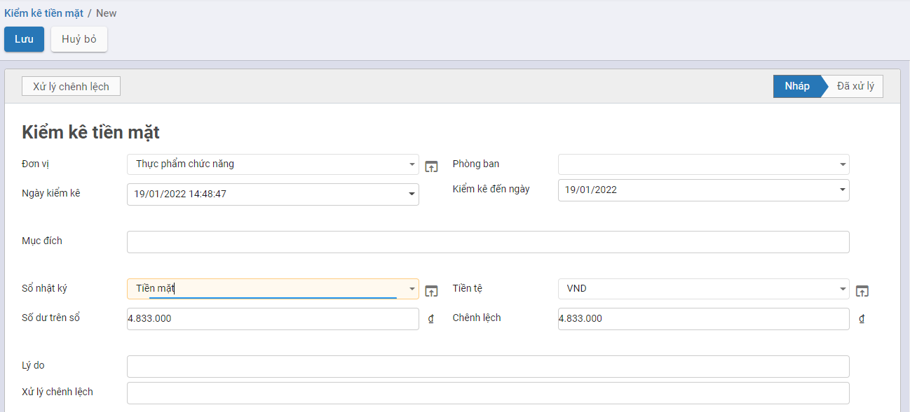
Bước 2: Khai báo các thông tin Kiểm kê tiền mặt
- Tại mục Đơn vị : Chọn Chi nhánh kiểm kê
- Tại mục Kiểm kê đến ngày: Chọn Ngày kiểm kê
- Tại mục Sổ nhật ký: Chọn Tiền mặt
-
Tại mục Tiền tệ: Chọn Tiền tệ kiểm kê
-
Tại Tab Kiểm kê : Thực hiện nhập số lượng từng mệnh giá còn tồn trong Quỹ
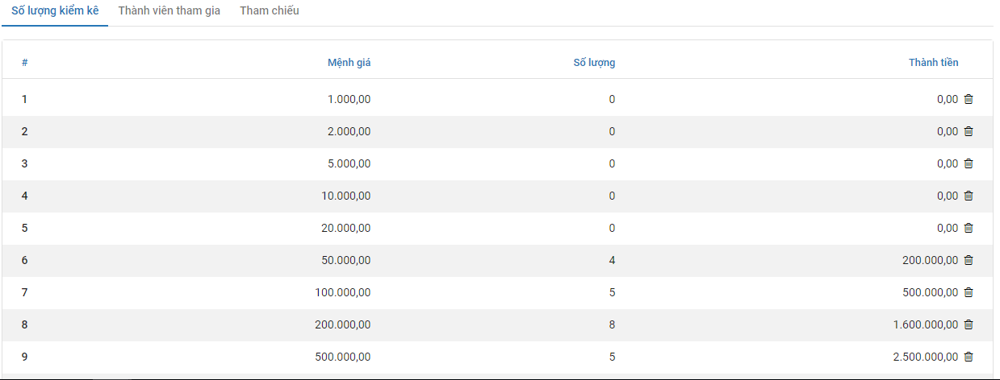
- Tại Tab Thành viên tham gia: Thực hiện chọn nhân viên tham gia kiểm kê

Bước 3: Nhấn Xử lý chênh lệch
- Căn cứ vào thực tế kiểm kê thừa hay thiếu, hệ thống tự động sinh ra Phiếu thu/Phiếu chi tương ứng. Cụ thể:
- Trường hợp Số kiểm kê thực tế < Số dư trên sổ kế toán, hệ thống sẽ tự động sinh ra Phiếu chi để xử lý giá trị thừa.
- Trường hợp Số kiểm kê thực tế > Số dư trên sổ kế toán, hệ thống sẽ tự động sinh ra Phiếu thu để xử lý giá trị thiếu.
Thanh toán lương cho nhân viên
Mô tả nghiệp vụ
Nghiệp vụ
Hàng tháng, sau khi Doanh nghiệp chốt thông tin lương sẽ thực hiện thanh toán tiền lương cho Nhân viên theo Bảng lương đã chốt.
Việc thanh toán được thực hiện thanh toán theo Tiền mặt hoặc Tiền gửi
Xem video hướng dẫn
[Xây dựng video hướng dẫn trên phần mềm, gồm đủ các luồng chức năng được mô tả bên dưới]
Hướng dẫn trên phần mềm
Đối tượng thực hiện: Người dùng phần mềm
Bước 1: Vào phân hệ Ngân quỹ,
- Chọn Tiền mặt, chọn Thanh toán lương cho nhân viên: Nếu muốn chi trả lương bằng Tiền mặt
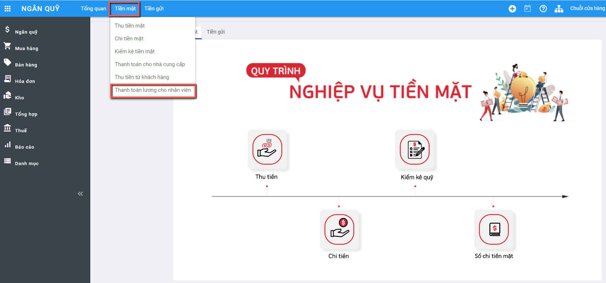
- Chọn Tiền gửi, chọn Thanh toán lương cho nhân viên: Nếu muốn chi trả lương bằng Tiền gửi ngân hàng

Bước 2: Hệ thống hiển thị thông tin màn hình chức năng:

Các trường dữ liệu trên chức năng:
- Thông tin Nhân viên: Đã được hiển thị mặc định danh sách các nhân viên đã được khai báo tại Danh mục Nhân viên
- Bảng lương: Thỏa mãn là Bảng lương đã được Xác nhận hoàn thành
- Thông tin Sổ nhật ký: Xác định Sổ nhật ký dùng để chi trả và lên các bút toán chi tiền lương cho nhân viên
- Thông tin Tổng số tiền phải trả: Là thông tin Số tiền của Bảng lương còn phải trả. Nếu là lần chi trả ban đầu thông tin 'Tổng tiền phải trả' chính là thông tin Tiền của Bảng lương. Với lần trả tiếp theo: Số tiền phải trả là giá trị còn lại của Bảng lương sau khi đã thanh toán lương lần đầu

Bước 3: Thực hiện chọn và Nhập thông tin dữ liệu
- Chọn Bảng lương
- Nhập thông tin Số tiền tương ứng cần thanh toán cho Nhân viên. Trường hợp không thanh toán giữ nguyên thông tin Số tiền thanh toán = 0
Lưu ý: Hệ thống sẽ báo lỗi khi 'Tổng tiền trả lần này' vượt quá 'Tổng tiền phải trả' và Báo lỗi khi Số tiền còn lại trong Sổ nhật ký không đủ để thanh toán khoản tiền phải chi trả
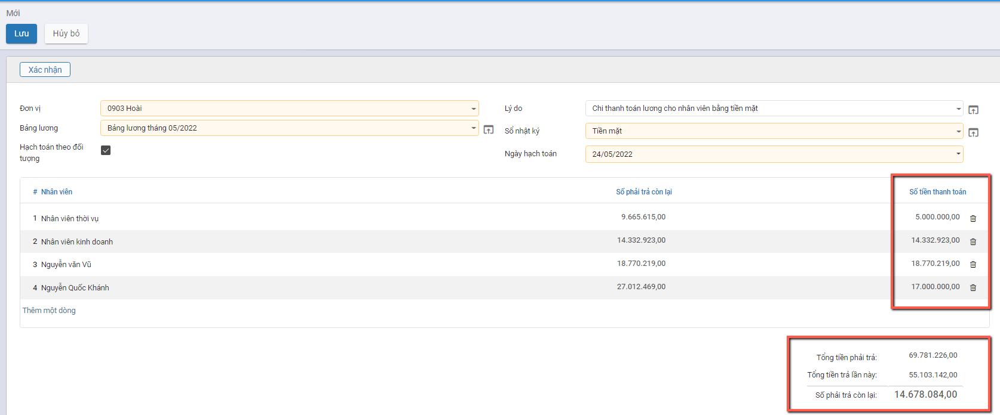
Bước 4: Người dùng Nhấn nút Xác nhận để ghi nhận thanh toán lương theo dữ liệu đã nhập.

Hệ thống tự động tạo ra các phiếu chi lương với các bút toán tương ứng với từng đối tượng
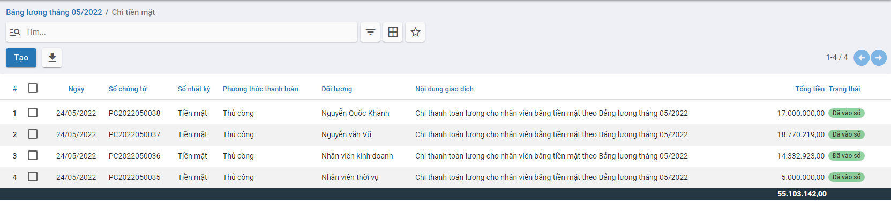
Thông tin chi tiết của Phiếu chi thanh toán lương
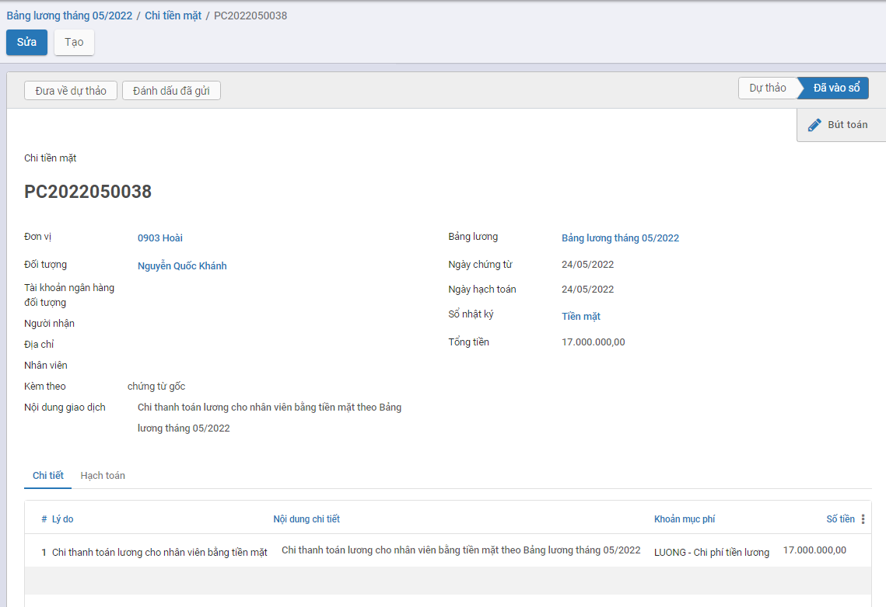
Lưu ý: Với các Bảng lương đã được thanh toán Chi trả, hệ thống thể hiện thông tin Số lượng Phiếu chi tương ứng đã được thanh toán của Bảng lương